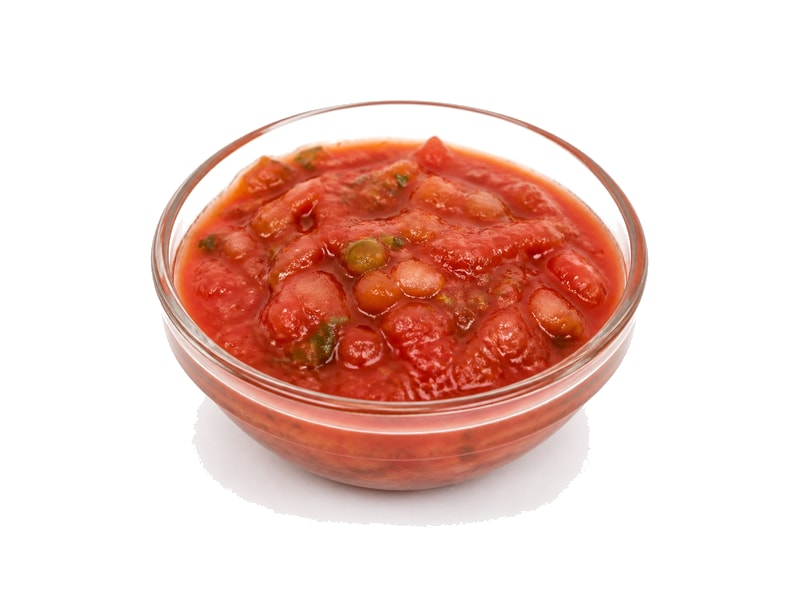

Sosy
Salsa meksykańska
Salsa meksykańska: 0.5 g białka, 36 kcal, 7 g węglowodanów i 0.3 g tłuszczu na 100 g. Kategoria: Sosy.
Kalorie36 kcalna 100 g
Białko / proteiny0.5 g
Węglowodany7 g
Tłuszcz0.3 g
Cena (szac.)~2,00 złza 100 g
Ceny zaktualizowano: maj 2026 (szacunek — ceny w popularnych supermarketach)
Porcja: łyżka (15g)
| Kalorie | 5 kcal |
|---|---|
| Białko | 0.1 g |
| Węglowodany | 1.1 g |
| Tłuszcz | 0 g |
| Cena (szac.) | ~0,30 zł |
Szczegółowe składniki odżywcze na 100 g
| Wartość energetyczna (kalorie) | 36 kcal |
|---|---|
| Białko (proteiny) | 0.5 g |
| Węglowodany | 7 g |
| Tłuszcz | 0.3 g |
| Tłuszcze nasycone | 0 g |
| Tłuszcze nienasycone | 0.3 g |
| Witaminy i minerały | Witamina C, Sód, Potas |
| Współczynnik kcal / 1 g białka | 72.0 |
| Cena produktu (szac. za 100 g) | ~2,00 zł |
| Cena za 100 g białka (szac.) | ~400,00 zł |